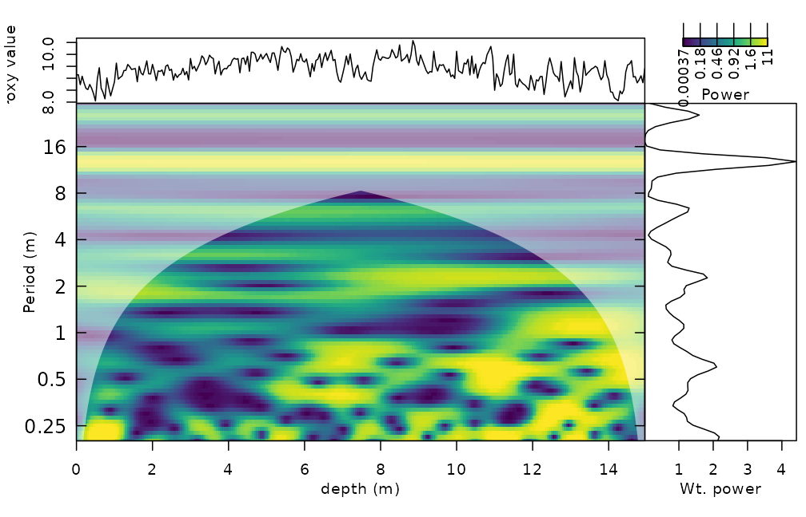
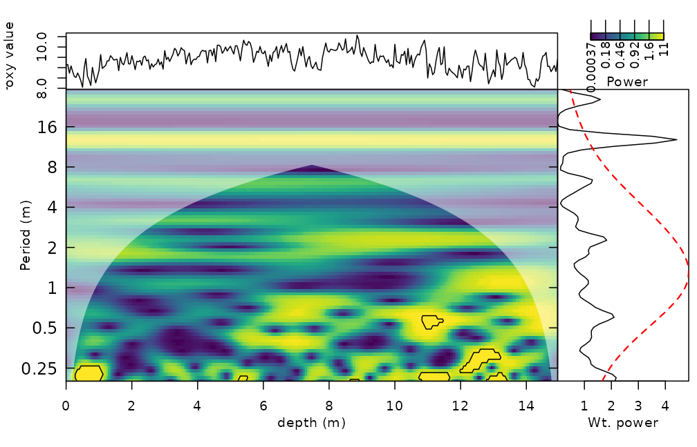
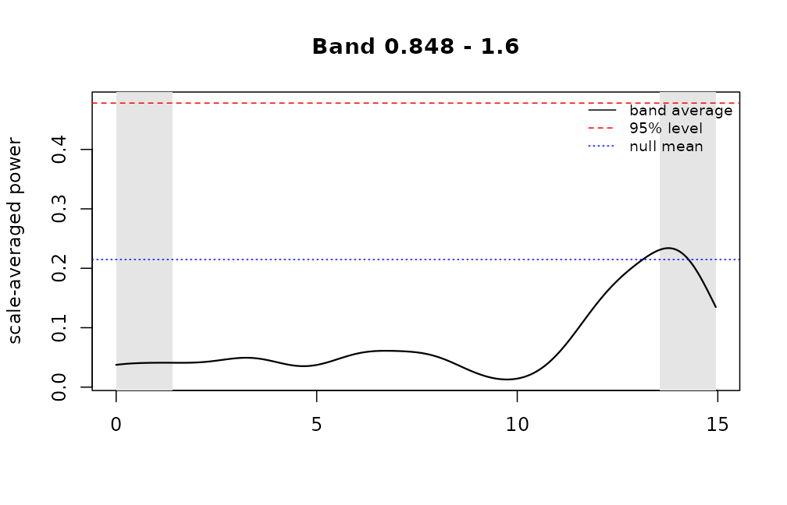
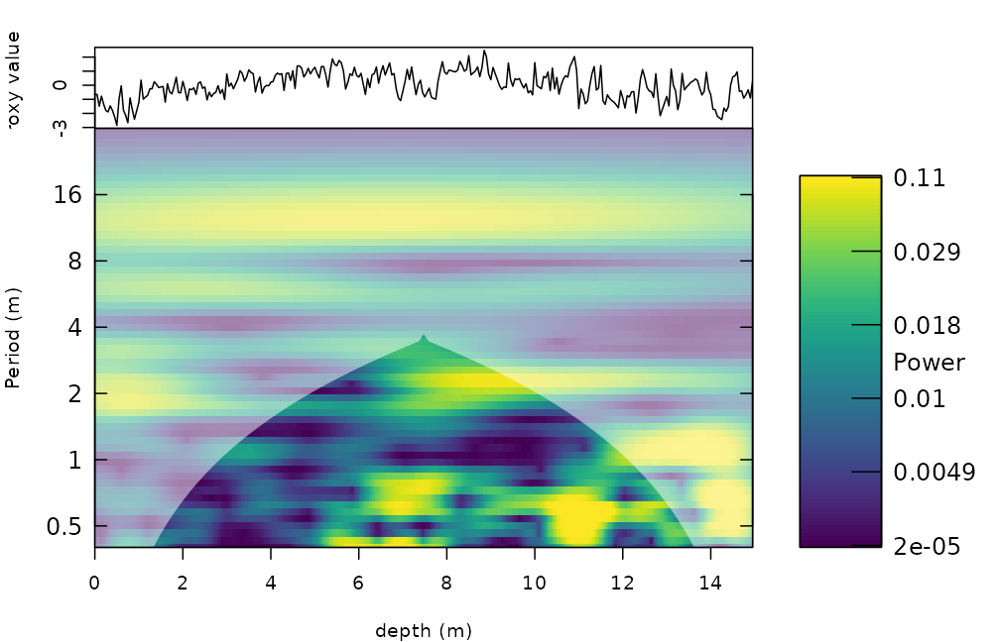

Getting started with WaverideR
Michiel Arts
Source:vignettes/WaverideR-intro.Rmd
WaverideR-intro.RmdWaverideR extracts cyclic signals from stratigraphic and other time
series with the continuous wavelet transform and the superlet transform.
This vignette follows a typical cyclostratigraphic workflow on the
magnetic susceptibility record of the Sullivan core (mag,
Pas et al., 2018): transform, test, estimate the sedimentation rate and
read off the uncertainty. The records are shortened and the resolution
is reduced so that the vignette runs in a few seconds; use the full
records and finer settings (smaller dj, more simulations)
for real work.
1. Wavelet transform
analyse_wavelet() takes a two-column table (depth or
time, value). The record is interpolated to its median spacing, padded,
and transformed with a Morlet wavelet. omega_nr is the
central angular frequency of the Morlet wavelet: a larger value gives a
better resolution in period and a poorer resolution in depth.
mag_short <- mag[1:300, ]
wt <- analyse_wavelet(data = mag_short, dj = 1/12, lowerPeriod = 0.2, upperPeriod = 32,
verbose = FALSE, omega_nr = 8)
plot_wavelet(wt, periodlab = "Period (m)", x_lab = "depth (m)", add_avg = TRUE)
The shaded area outside the dome-shaped boundary is the cone of influence, where edge effects matter.
2. Is a peak significant?
wavelet_significance() outlines the cells of the
scalogram that are significant against a red noise (AR(1)) background
(Torrence and Compo, 1998) and gives the level of the global spectrum.
method = "surrogate" does the same with noise surrogates
that pass through the same transform, and works for superlets too.
sig <- wavelet_significance(wt)
plot_wavelet(wt, periodlab = "Period (m)", x_lab = "depth (m)", add_avg = TRUE, add_signif = sig)
To test the power in a band, for example the precession band, use the
scale-averaged significance. It is valid for any omega_nr,
because the null distribution is derived from the wavelet itself rather
than from a fixed constant:
band <- wavelet_band_significance(wt, period_range = c(0.8, 1.6), background = "ar1")
band
#> Significance of scale-averaged wavelet power (exact, ar1 background, level 0.95)
#> band: periods 0.8476 to 1.6 (12 scales)
#> equivalent degrees of freedom: 5.06
#> expected band average under the null: 0.2147 critical value: 0.478
#> significant points: 0 of 242 outside the cone of influence
plot(band)
3. Superlets
Superlets combine several wavelet widths at every frequency and give
a better resolution in both period and depth. The order grows from
o[1] at the lowest to o[2] at the highest
frequency. With mult = TRUE the i-th wavelet has
i * c1 cycles, with mult = FALSE it has
c1 + i - 1 cycles (Moca et al., 2021).
sl <- analyse_superlet(mag_short, upperPeriod = 32, lowerPeriod = 0.4, Nf = 60,
c1 = 3, o = c(1, 4), mult = TRUE)
plot_superlet(sl, periodlab = "Period (m)", x_lab = "depth (m)")
4. Sedimentation rate from the wavelet spectrum
flmw() tests, for every depth and every trial
sedimentation rate, how well the expected astronomical periods (in kyr)
match the peaks of the wavelet spectrum. flmw_path() adds
continuity along depth.
cycles <- c(2376, 1600, 1180, 696, 406, 110) # periods in kyr
sr <- flmw(wavelet = wt, sedrate_low = 0.5, sedrate_high = 4, spacing = 0.5,
cycles = cycles, x_lab = "depth", y_lab = "sedrate", run_random = FALSE,
genplot = FALSE, plot_res = 2)
str(sr, max.level = 1)
#> List of 13
#> $ slope_coeff_mat : num [1:8, 1:300] 0.0914 0.1127 0.0654 0.1211 0.2011 ...
#> $ corr_coeff_mat : num [1:8, 1:300] 0.995 0.998 0.994 0.987 0.97 ...
#> $ nr_compenents_mat : num [1:8, 1:300] 5 5 4 4 3 3 3 3 5 5 ...
#> $ orig_mat : num [1:8, 1:300] 0.7378 0.0698 0.6328 -0.6982 -1.4504 ...
#> $ slope_coeff_mat_per : num [1:8, 1:300] NA NA NA NA NA NA NA NA NA NA ...
#> $ corr_coeff_mat_per : num [1:8, 1:300] NA NA NA NA NA NA NA NA NA NA ...
#> $ nr_compenents_mat_per: num [1:8, 1:300] NA NA NA NA NA NA NA NA NA NA ...
#> $ orig_mat_per : num [1:8, 1:300] NA NA NA NA NA NA NA NA NA NA ...
#> $ depth : num [1:300] 0 0.05 0.1 0.15 0.2 ...
#> $ y_axis : num [1:8] 0.5 1 1.5 2 2.5 3 3.5 4
#> $ score_mat : num [1:8, 1:300] 0.754 0.738 0.619 0.578 0.387 ...
#> $ best_sedrate : num [1:300] 0.5 0.5 0.5 0.5 0.5 0.5 0.5 0.5 0.5 0.5 ...
#> $ method : chr "classic"The alternative is to sum the spectral power above a red-noise
threshold. The red noise is simulated with the autocorrelation, mean and
variance of the record (model_red_noise_wt()), and
sum_power_sedrate() then scores each trial sedimentation
rate (use many more simulations in practice):
set.seed(1)
rn <- model_red_noise_wt(wt, n_simulations = 10)
ssr <- sum_power_sedrate(red_noise = rn, wavelet = wt, percentile = 0.75,
sedrate_low = 0.5, sedrate_high = 4, spacing = 0.5, cycles = cycles)
dim(ssr$power_max_mat) # trial sedimentation rates x depths
#> [1] 8 3005. Uncertainty of the frequency
The Morlet wavelet has a limited frequency resolution;
wavelet_uncertainty() gives the conservative analytical
uncertainty for the omega_nr used, which is the input for
the uncertainty of age models built from tracked periods.
6. Parallel computing and memory
Everything is sequential by default. Set
run_multicore = TRUE (and optionally n_cores)
in the functions that offer it, or
options(waverider.n_cores = 2). The number of cores is
capped by the physical cores, the free memory and the CRAN limit, and
results do not depend on it.
References
Moca, V.V., Barbulescu, A., Nagy-Dabacan, A., Muresan, R.C. (2021). Time-frequency super-resolution with superlets. Nature Communications 12, 337.
Pas, D., Hinnov, L., Day, J.E., Kodama, K., Sinnesael, M., Liu, W. (2018). Cyclostratigraphic calibration of the Famennian stage (Late Devonian, Illinois Basin, USA). Earth and Planetary Science Letters 488, 102-114.
Torrence, C. and Compo, G.P. (1998). A practical guide to wavelet analysis. Bulletin of the American Meteorological Society 79, 61-78.